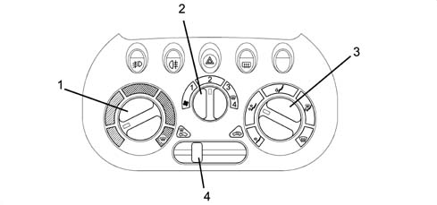

5020B heater controls
- Path
- Descriptions > 50 AUXILIARY UNITS > 5020 HEATER > 5020B heater controls
- Kind
- system description
- Applies to
- all engines; all production periods
- Interactive page
- https://sloeber94.github.io/elrnDB-fMltpl/en/#/2888276
Applies to: all engines; all production periods
The control panel has three knobs which control the fan which adjusts the amount of air (at 4 different speeds), the temperature of the air entering the passenger compartment and the distribution flows.
There is also a cursor which allows the recirculation function to be switched on.

1, Air temperature knob 2, Fan speed knob 3, Distribution flow knob 4, Recirculation cursor